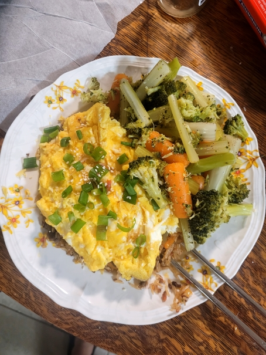

My Hobbies
In my free time, I love engaging in a variety of activities that help me relax, learn, and explore new interests. Here are some of my favorite hobbies:
Sim Racing
One of my biggest passions is sim racing. I spend a lot of time racing in simulation environments, which allows me to experience the thrill of motorsports without leaving the comfort of my home. I enjoy the challenge of mastering different tracks and improving my driving skills through each race.

Cooking
When I'm feeling bored or need a creative outlet, I often find myself in the kitchen experimenting with new recipes. Cooking allows me to unwind and enjoy the process of creating something delicious, whether it's a simple meal or a more complex dish.
Video Gaming
Video gaming is one of my all-time favorite pastimes. Whether it's exploring new virtual worlds, competing in multiplayer games, or enjoying story-driven experiences, gaming provides a great way to unwind and have fun. It also offers a chance to connect with friends and fellow gamers.
Watch me Play!
Traveling
Traveling is another hobby I deeply enjoy. Exploring new places, experiencing different cultures, and meeting new people is something I find enriching. I love discovering hidden gems in both well-known and off-the-beaten-path locations, and I plan to continue expanding my travel experiences.
Video Editing
I enjoy video editing as a way to express my creativity and tell stories. Whether it's editing gameplay footage, travel vlogs, or other creative projects, video editing allows me to craft visual narratives and experiment with different styles. It's a skill I continue to develop and use for fun projects and personal enjoyment.